手动移动机床的方法有三种：
方法一: 连续移动（
(1) 置模式旋钮在“JOG”位置：
(2) 选择各轴,按方向钮，按住按钮机床台面运动，松开后停止运动。
方法二: 增量点称动（
 ），这种方法用于微量调整，如用在对基准操作中。
），这种方法用于微量调整，如用在对基准操作中。(1) 置模式旋钮在“JOG”位置： 选择
步进量。(2) 选择各轴,按按钮，每按一次，台面移动一步。
方法三: 操纵“手轮”（
 ），这种方法用于微量调整。在实际生产中，使用手脉可以让操作者容易调整自己的工作位置。
），这种方法用于微量调整。在实际生产中，使用手脉可以让操作者容易调整自己的工作位置。| EZMotion-NC E60-M数控系统操作 |
在“视图”下拉菜单或者浮动菜单中选择“控制面板切换”后，数控系统操作键盘会出现在视窗的右上角，其左侧为数控系统显示屏，如下图所示。用操作键盘结合显示屏可以进行数控系统操作。
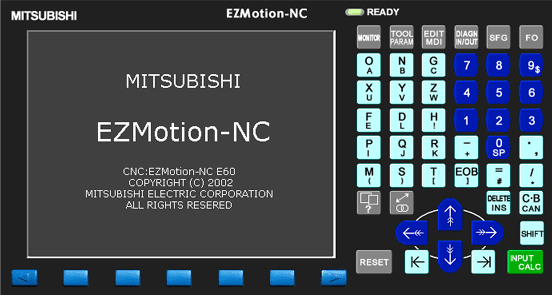
数字/字母键
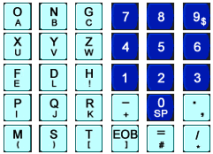
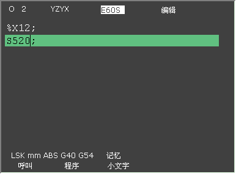
翻页按钮（PAGE）
向上翻页。
此键功能是将现在画面翻到上一页。以每页为单位换页，并且换页后光标会停在第一个字符串开头。
向下翻页。
此键功能是将现在画面翻到下一页。以每页为单位换页，并且换页后光标会停在第一个字符串开头。
光标移动（CURSOR）
向上移动光标。
向下移动光标。
向左移动光标。
向右d移动光标。
输入键
输入键。
当光标不在程序开关面停留在任何一个单节开关时，如果按下输入键，则从这个单节开始呼叫。当光标在程序最开头的时候，等同于在相对值画面上进行程序呼叫的操作。
重置键
复位键为“ON”时，NC装置处于复位状态。当NC装置在运转中，“复位”ON时，将出现下列情况：
如在移动指令执行中，则移动会减速停止，进行单节的剩余距离被清除。
如在M、S、T等的辅助功能的指令执行中，则辅助功能的执行被中断。
缓冲存储器的内容及显示被清除。
如在程序错误发生时，则程序错误状态被清除，报警灯熄灭。
输出/输入装置运行时开启复位开关，则电源被切断。
复位开关ON时，持续状态将返回初期化状态。
手动操作虚拟数控铣床
回参考点
*置模式旋钮在“”位置
*选择各轴,按住按钮,即回参考点.
移动
手动移动机床的方法有三种：
方法一: 连续移动（ ）。这种方法用于较长距离的台面移动。
）。这种方法用于较长距离的台面移动。
(1) 置模式旋钮在“JOG”位置：
(2) 选择各轴,按方向钮，按住按钮机床台面运动，松开后停止运动。
方法二: 增量点称动（），这种方法用于微量调整，如用在对基准操作中。
(1) 置模式旋钮在“JOG”位置：
选择步进量。
(2) 选择各轴,按按钮，每按一次，台面移动一步。
方法三: 操纵“手轮”（），这种方法用于微量调整。在实际生产中，使用手脉可以让操作者容易调整自己的工作位置。
开、关主轴
置模式旋钮在“MEMORY”位置。
按 按钮开
机床主轴 、按
按钮开
机床主轴 、按 关机床主轴
关机床主轴
启动程序加工零件
置模式旋钮在“MEMORY”位置
选择一个数控程序
按数控程序运行控制开关中的按钮
编辑画面的菜单功能
（1）选择画面时的菜单
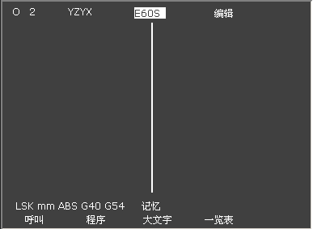
（2）编辑画面的扩张操作菜单
| 菜单 | 功 能 |
| 呼叫 |
1.进行任何字符串的呼叫。 2.进行编辑用的程序编号、顺序编号的呼叫。 |
| 程序 | 在画面上准备新加工程序并登录。 |
| 一览表 |
1.可将内存内所登录的加工程序一览表加以确认。 2.可设定注释。 |
| 大文字 | 在画面上，每行仅显示40个字符。 |
| 小文字 | 在画面上，每行仅显示80个字符。 |
扩张操作菜单在选择时，9为反白表示。当选择一个扩张操作菜单时，可进行扩张操作，但不能进行程序编辑。未选择任何扩张操作时，则可进行程序编辑。 扩张操作菜单，在第一次按下时为选择状态，再次按下时成为非选择状态，或在设定处理正常完成后自动恢复为非选择状态。
（3）编辑程序的呼出
在编辑画面进行程序编辑时，首先必须操作扩张操作菜单的“呼叫”或“程序”。
如编辑已登录在内存内时，则进行“程序”的操作。有关详细的操作信息请参照“编辑画面扩张操作”。
如果在程序编辑过程中操作其它功能画面兵后，再次选择编辑画面，会显示选择编辑画面，会显示前次编辑的数据。但在下列情况下则成为任何均未呼出的状态，编辑前要再次进行数据呼叫。
1）由编辑画面编辑的程序，经压缩功能压缩后，再次选择编辑画面时。
2）由编辑画面编辑的程序，经合并功能与其它的程序合并后，再次选择编辑画面。
（4）全页模式/半页模式
编辑和MDI画面的显示，可用全页键或半页键来切换
在全页模式时，可使用数据呼叫和程序创建功能，但没有程序一览表功能。如需核查储存的程序，请参照数据输入/输出程序一览表。
（注1）假如在编辑画面中，改变模式，则MDI画面的模式也同样改变。
（注2）当“编辑中”在画面的右下角显示时，菜单键“前页”或“次页”无效，即按键并不改变模式。
（注3）在电源切断或画面改变后，模式仍保持不变。
程序编辑操作
数据显示更新
画面所显示的数据，用
或键，以1行为单位更新显示。
在画面底部按键或在画面顶部按键时，则滚动一行。
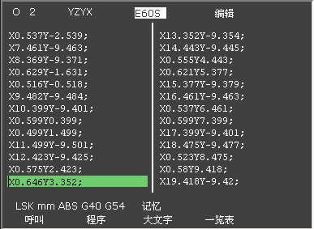
1）每按一次，光标向下移动一行。
2）光标在画面底部时按键，显示的数据仅向上移动一行，光标保持在底部不动。
3）再次按键时，显示的数据会一行一行向上移动，新数据显示在画面最底部。
4）与之相反，按键，光标向上移动一行；当光标在画面顶部时按键，显示的数据会一行一行向下移动，前一单节数据会显示出在画面顶部。
数据变更
加工程序如果不是记忆操作中的程序，则随时可编辑，
例如：想编辑的数据如下图所示。
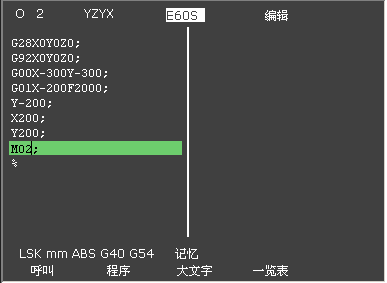
将Y200变更为G03 Y200 J100步骤如下：
（1）将光标移动到想变更的数据处。如下图：
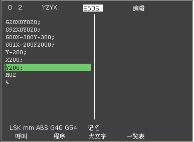
（2）设定新数据G03 Y200 J100如下图：
每次设定字符时，光标会自动向右移动1格。
（3）修改完成后，按下键，新数据被写入。
数据的插入
例如：G03 Y200 J100；的单节要插入数据F500时。
（1）将光标移动到要插入位置的下一个字符处。
（2）按下后再按
1）光标以后的字符向右移动
2）在光标显示的位置插入数据。
（3）数据插入F500如下图：
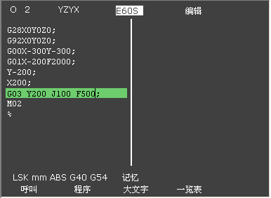
1）按下想插入的数据键，在显示的位置设定数据。
2）每插入1个字符，光标自动向右移动1格，其后的字符也向右移动。
3）重复上述1，2的操作，可连续插入几个字符，但如果画面上的光标位置之后没有间隔，则无法插入更多的数据。
（4）修改完成后按键，新数据写入记忆。
字符删除
例如：G03 Y200 J100 F500；单节的F500要变更为F50，需删除字符0。
（1）将光标移动到想删除的字符的位置。如下图：
（2）按下键。
1）数据被删除。
2）光标自动向右移动1格。
（3）修改完成后按键，新数据写入记忆，被删字符右侧的字符左移。
1个单节的删除
例如：G03 Y200 J100 F50；的单节要全部删除。
（1）将光标移动到想删除的单节的位置。如下图：
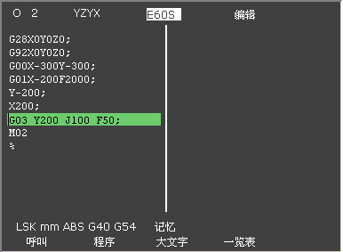
（2）按下键，整个单节的数据被删除。如下图：
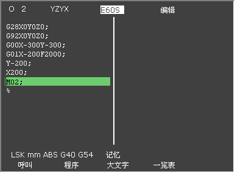
（3）修改完成后按键，单节中数据从记忆内删除。被删单节后的节段前移并显示。
1个画面数据的删除
例如：如下图所示的数据，在此画面所显示的数据要全部删除时
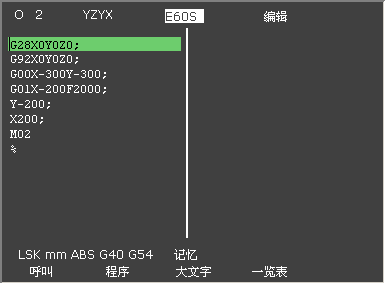
（1）按下键后再按下键，整个画面成为空白。
（2）按下键，整个画面所的显示的数据，从记忆内删除。
编辑画面的扩张操作
编辑数据的呼出
以下说明想编辑的程序或想编辑的单节呼出的。呼叫功能也可用于背景编辑时呼出正在运行中的工程序。也可用于程序开关的呼叫、字符串的呼叫和顺序编号的呼叫。
1、程序先头的呼叫
在设定区域指定呼出程序编号。操作步骤如下：
（1）按下菜单键“呼叫”如下图：
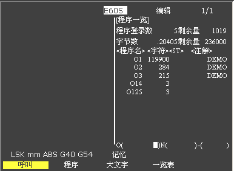
显示呼叫的设定区域。
（2）设定呼出的程序编号，如O1
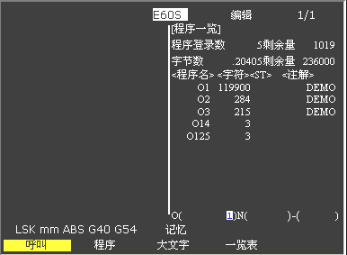
（3）按下键，呼叫中会显示“呼叫执行中”的信息，指定程序从开头起显示，光标显示在画面顶部，呼叫正确完成后，设定区域的显示会消失，“呼叫”菜单显示也由反白恢复为正常。如下图：
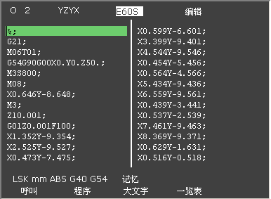
2、字符串的呼叫
寻找想修改的文字数据时，可使用此字符串和叫。
在设定区域指定呼出的程序编号与字符串。但如果呼叫的字符串已在画面显示的程序中时，则可省略程序编号的指定。操作步骤如下：
（1）按下菜单键“呼叫”，显示呼叫的设定区域。
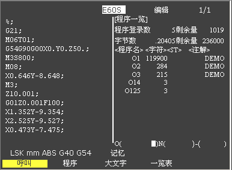
（2）设定呼出的程序编号和字符串如：“N G01”
（3）按下键，指定字符串的呼叫从指定程序的开关开始。程序从包含已找到字符串的单节起显示。光标显示在呼叫字符串的开关。呼叫正确完成后，设定区域的显示会消失，数据呼叫的菜单显示由反拉拉扯扯恢复为正常。
（注1）指定的字符串无法找到时，会显示“无该字符串”的信息。
（注2）字符串的指定最多为11个文字。
（注3）当呼叫指定的字符串时，不仅相同的字符串被呼叫，而且带有此字符串的其它字符串，也可被呼叫。
3、顺序编号、单节编号的呼叫。
在设定区域指定呼出的程序编号、顺序编号和单节编号。
N（）中仅为数字时，成为顺序编号呼叫（如包括英文字母或记号则成为字符串呼叫）。如果呼叫的顺序编号已在画面显示的程序中，则可省略程序编号的指定。操作步骤如下：
（1）按下菜单键“呼叫”显示“呼叫”的设定区域。
（2）设定想呼出的程序编号、顺序编号和单节编号。如：O（）N（6）－（）
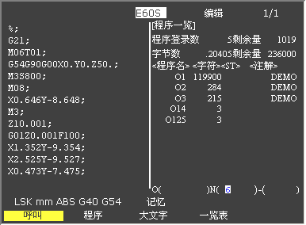
（3）按下键，从所指定程序的开关将该N编号找出。程序显示在包含已找到N编号的单节开头。但对于已在画面显示的程序，将从显示部分开始呼叫N编号。光标显示在该单节的开关，呼叫正确完成后，设定区域显示消失，呼叫菜单人反白恢复为正常。
（注1）指定N无法找到时，会显示“无该NB”的信息。
（注2）指定的程序无法找到时，会显示“无该程序”的信息。
（注3）顺序编号的指定最多为5位数。
新程序的登录和形成
用于准备新的加工程序，选择“程序”的菜单，首先决定加工程序的编号，将编号登录。然后用按键直接输入程序，在画面上形成加工程序。
（1）按菜单键“程序”，显示“程序”设定区域。
（2）设定新登录的程序编号。必要时，可同时设定注解。例：O（18）。
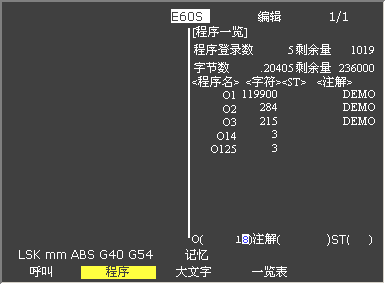
（3）按下键，程序编号与注解被公正登录在记忆内，并显示在画面上。此时仅有1个文字“%”作为数据自动登录在记忆内，画面如下图所示：
（4）用按键依次输入加工程序，各按键的操作与一般程序的编辑操作完全相同。
（注1）用本功能将程序登录于记忆内，以后编辑此程序时与其它程序相同，可用“呼叫”操作将其呼出。
（注2）为程序做注解时，可输入“空格键”，但当程序登录在记忆内后，此空白变成无效。
位置显示
相对值
按下功能选择键，显示下列菜单：
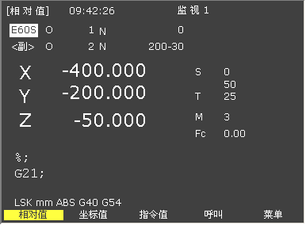
在相对值画面上，可进行如下操作：
1）CRT画面的完全清除。
2）原始设定。各轴目前的相对值的数据可设定为0。
3）手动数值指令。M.S.T等的辅助功能输出可通过CRT画面设定。
1、相对值显示的计数归零、原点归零
计数归零
只设定相对值显示为0，绝对值数据不变。
原点归零
将相对值显示和绝对值数据都设定为0。其等同于G92 X0 Y0 Z0；
键具备计数归零（标准使用）功能。
键具备原点归零（设定零）功能。
注意：也会将G54工件坐标归零。
（1）按下地址键。按键对应的地址显示为反白。
（2）按下键（计数归零）或按下键（原点归零）。
X轴位置的数据设定为0，下一个轴的名称会反白显示。重复按下键 或键，可将其它轴的位置数据清除为0。最终轴清除为0后，反白显示消失。在中途按下轴的地址键，则选定轴的地址会反白显示。
2、手动数值指令（S，T，M指令）
主轴功能S、刀具功能T、辅助功能M的指令，可以简单地在CRT画面上操作。也就是说，可通过键入S，T，和M来执行这些指令，其效果与通过程序来指定这些指令相同。
（1）进行手动数值指令的条件
不在M，S，T指令的顺序处理中。例如， 自动起动中或自动休止中，只要满足上述条件，则可用手动数值指令。
（2）手动数值指令的操作步骤
1）选择位置显示的“相对值”的菜单画面。
2）按下指令对应的地址键，对应的指令值显示区域反白显示，成为手动数值指令输入状态。主轴功能键为S，刀具功能键为T，辅助功能键为M。
3）将所要指令的数值用按键输入。
4）按下键。
坐标值
按下菜单键“坐标值”，显示坐标值画面。
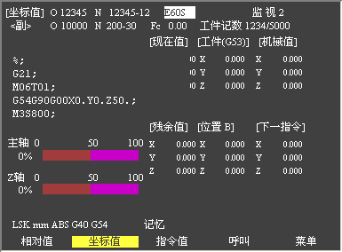
指令值
按下菜单键“指令值”，显示指令值的画面。
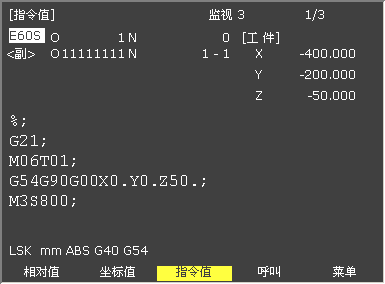
呼叫
按下菜单键“呼叫”时，显示程序呼叫画面。
在呼叫画面，可以从记忆登录的加工程序中，将自动运转所无原则的程序编号、顺序编号、单节编号呼出。
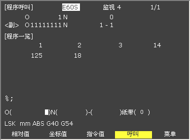
记忆呼叫
加工前将程序从记忆所登录的加工程序中呼出。
设定所呼出的程序编号、顺序编号及单节编号，将纸带呼叫的设定区域设定为0。电源接通时的初期状态为记忆呼叫。
（1）设定所呼出的程序编号、顺序编号及单节编号。例：要呼出O1N20单节时O（1）N（20）－（）纸带（0）
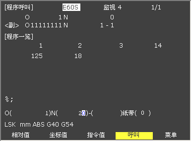
（2）按下键，开始呼叫，找到指定的程序编号、顺序编号及单节编号时，会显示呼叫完毕的信息。画面最上端的O，N处显示找到的编号，在加工程序的显示区域，显示所找到的单节数据。
刀具补偿（M系）
按下功能选择键，将显示下列菜单。
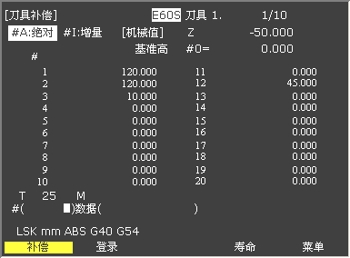
注意：自动运转（或单节停止）期间，如要改变刀具补偿或坐标系统补偿，则新的补偿值将从下一单节或多节以后有效。
刀具补偿
当按下菜单键“补偿”，显示刀具补偿画面。
（1）刀具补偿记忆（种类1）
形状补偿记忆与磨耗补偿记忆没有区别，设定形状补偿的总量。补偿数据中刀具长度和刀具半径补偿是共享的。
（2）刀具补偿记忆（种类2）
分别设定形状补偿量和磨耗补偿量。形状补偿量分成长寸法和径寸法。对于补偿数据，长寸法数据用于刀具长度补偿，径寸法数据用于刀具半径补偿。
刀具补偿数据的设定
（1）种类1
设定刀具补偿数据时，在＃（）中设定补偿记忆号码，在数据（）中设定补偿数据，然后按下键。
（2）种类2
设定刀具补偿数据时，在＃（）中设定补偿记忆号码，在设定区域中相对于长寸法、长磨耗、径寸法和径磨耗中设定的补偿数据，然后按下键。
（3）在补偿记忆号码和刀具补偿数据设定后，如果按下键，设定的补偿数据就显示在补偿记忆号码位置，设定部＃（）中的补偿记忆号码增1，并且数据（）中内容消失。这时光标移到同一设定区域的右端。
（4）如果刀具补偿数据被设定，但补偿记忆号码没有包含在显示的补偿记忆号码中时，第1次按下键时，画面切换到建立补偿记忆号码对应的画面。当再次按下键时，设定的刀具补偿数据显在补偿记忆号码位置。
（5）通过连续按键或键，显示在＃（）中的补偿记忆号码可以连续增加1或减少1。
（6）为了设定增量值模式，在＃（）中输入1然后按键。
在增量值模式中，设定数据将加到显示区域的数据中。为取消增量值模式，在＃（）中输入a，然后按下键，就变为绝对值模式。
刀具补偿数据的清除
在显示画面上清除
在一个画面上显示20组刀具补偿数据。清除所有显示的补偿数据时，按下键，然后再按下键和键
刀具补偿数据的设定模式（绝对值/增量值）
（1）模式选择法
绝对值设定
改变为绝对值设定模式，方法如下：
在＃（）中输入A，然后按键。＃（A）数据（）
增量值设定
改变为增量值设定模式，方法如下：
在＃（）中输入“I”然后按键。＃（I）数据（）
刀具登录
当按下菜单键“登录”，显示刀具登录画面。
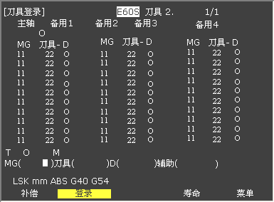
功能概要
使用刀具可登录在刀库座中。
当刀具选择指令或刀具更换指令改变刀具库座和刀具号码时，显示新刀具号码。
可在设定区域辅助（）中设定任何数据，并由用户PLC执行顺序处理。
刀具可登录在显示于画面上方的主轴刀、预备刀1至预备刀3和索引区。显示名称和显示数目可以改变。
尽管登录的刀具数因规格不同而不同，但最多可登录80把刀具（刀具号码最多4位）。
用手动数值指令可进行刀具选择和刀架上刀具的更换。
刀具库中刀具的登录
（1）在MG（）中设定1，刀具（）中设1234，D（）中设2。
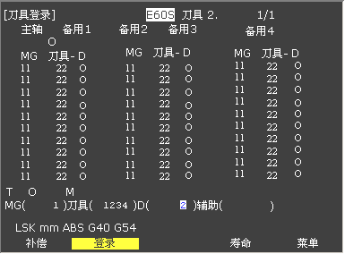
（2）按下键。刀具号码和D中的数据显示在规定的刀具库号码区域。设定区域MG（）中的刀库号码增加1，其它括号中的数据消失。如果设定的刀库号码不包括在数据显示区域列出的刀库号码中，当第1次按下键，画面切换到相应的建立刀库号码的画面。当再次按下键时，显示设定在数据区域中的数据。
刀具登录数据的清除
（1）在MG（）中设定CL。
（2）按下键，在主轴刀、预备刀1至预备刀3、索引区和MG1到MGn中的所有数据都被清除。
刀具寿命管理
当按下菜单键“寿命”时，显示刀具寿命画面。
刀具寿命画面由主轴刀、预备刀、组号一览表画面和刀具寿命数据画面组成。
功能概要
（1）刀具寿命管理1
程序操作时刀具的使用时间或使用次数被累加并监视刀具使用状态。
（2）刀具寿命管理2
刀具寿命管理2将备用刀具选择功能加到刀具寿命管理1上，在程序操作的刀具指令中选择备用刀具。所选用的刀具执行刀具直径补偿。
用户参数
按下功能选择键，在显示菜单中按“菜单”键来显示参数菜单。如下图：
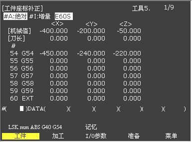
工件坐标
按下菜单键“工件”，显示工件坐标补偿的画面，可设定或显示各轴工件坐标系补偿数据。
工件坐标系补偿数据的设定
（1）在＃（）中输入工件坐标系对应的编号，数据（）中输入补偿数据，按下键可以设定工件坐标系补偿数据。
（2）用此方法定义的工件坐标系补偿数据就显示在工件坐标系的位置上，在＃（）中的数目就变为下一个设定值，在数据（）中的数据消失。
（3）＃（）内所表示的编号可通过 键实现±1逐次增减。
（4）在＃（）中输入“I”并按键，设定模式为增量模式。在增量模式下输入的数据被加到设定区的数据上。在＃（）中输入A并按键，取消增量模式，恢复成绝对模式。
外部工件坐标系补偿数据的设定
通过用外部的接触探针等测量坐标系的偏差，从G54～G59为止的全部工件坐标系能被补偿。
外部工件坐标系数据可通过两种方法设定，直接将外部数据输入外部补偿（EXT）或在设定区用手动操作（EXT）将其输入。
设定方法与工件坐标系补偿的设定相同。